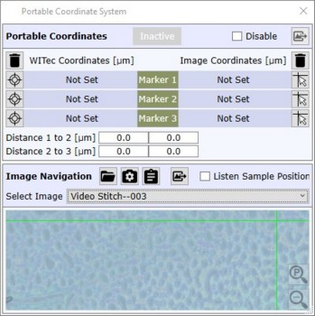
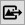
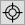
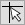

|
可移动坐标系
|

可移动坐标可学习3个标记点，以便：
禁用
在新数据对象中禁用可移动坐标的使用。

导出标记图像导出在每个标记位置采集的视频图像。
WITec 坐标
删除标记
删除所有显微镜标记

设置标记位置将当前样品位置设为所需的标记位置
图像坐标
删除标记
删除所有图像标记。

设置标记位置如果打开，可单击图像以定义图像标记位置。
标记按钮
单击此按钮将样品定位器移动到已学习的标记位置。
标记1到2的距离/标记2到3的距离
在此可定义标记位置之间的预期距离，以便自动移动到下一个标记。
只需单击 标记2 或 标记3 即可移动到下一个标记。
图像导航
从文件加载图像
从文件加载图像。
支持格式：
从外部摄像头获取图像
可从此处从外部摄像头（例如 USB 网络摄像头或桌面摄像头）获取图像。
从 Windows 剪贴板获取图像
从 Windows 剪贴板获取图像。
导出图像到当前项目
将当前图像作为新的 WITec Project 位图 对象导出到当前项目，空间位置从所有标记计算得出。
监听样品位置
如果选中，可单击图像以将样品定位器移动到所需位置。
仅在 WITec 和图像坐标均定义了全部3个标记时才有效。
选择图像
如果加载的图像文件包含多个图像，可以选择应显示哪个图像。